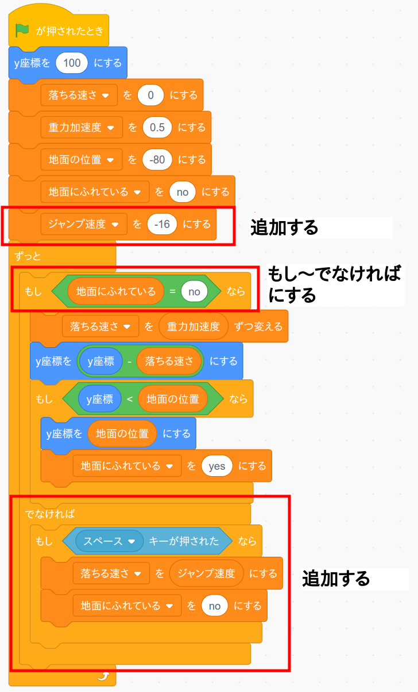
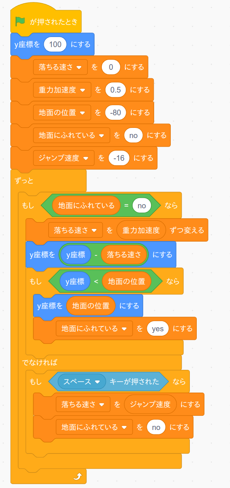

では恐竜をジャンプさせてみましょう。
まず「ジャンプ速度」という変数を追加します。
あとは前ページで作ったプログラムを次のように変更するだけです。
上の図のコメントや赤い枠が見づらい人は次の画像を使って下さい(同じ内容です)。
このプログラムでは恐竜が地面にいるときにスペースキーを押したら、変数「落ちるスピード」の値を変数「ジャンプ速度」の値にします。 ここで変数「ジャンプ速度」の値はマイナスですので上に向かって恐竜は上昇することになります。
ただし一度地面から離れてしまうとまた重力によって下方向に引っ張られますので、少しずつ上昇速度が落ちていって最後には落下し始めます。
作成したら旗ボタンを押して動作確認して下さい。